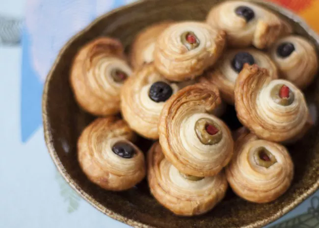

Odin Recipes
Olive Puffs

Crunchy puff-pastry surrounding rich olive centres
This recpie takes 20 inutes to make, 20 minutes to cook and, offers 12 servings
Ingredients:
- 24 pimento-stuffed green olives
- 1 (17.25 ounce) package frozen puff pastry, thawed
Preperation Guide:
- Preheat oven to 400 degrees F (200 degrees C).
- Cut pastry into strips about 6 inches long and 1/2 inch wide. Wrap a belt of pastry around each olive. Place on an ungreased baking sheet.
- Bake for 20 minutes, or until golden brown.